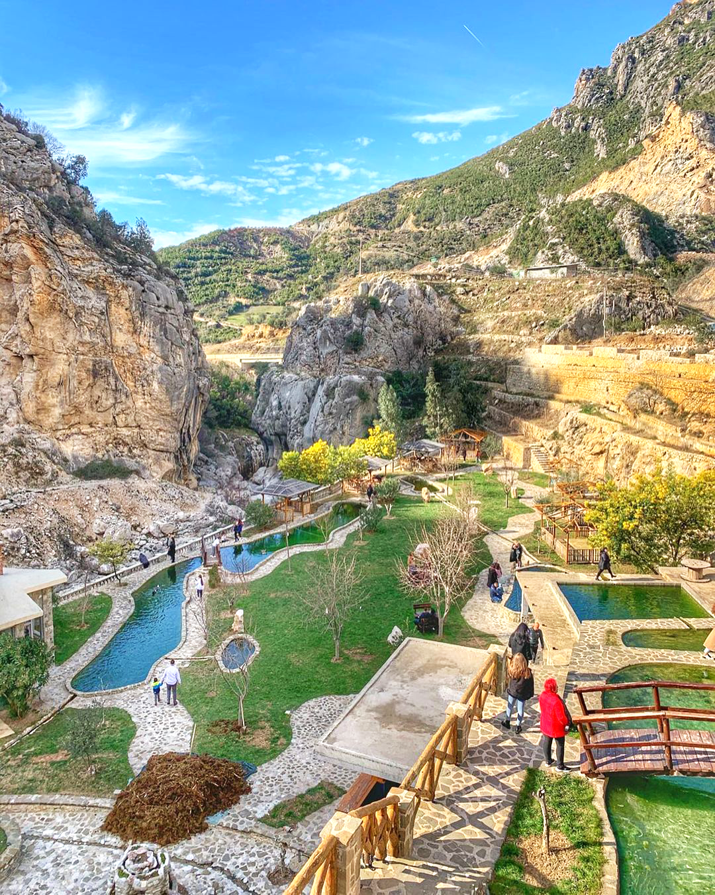
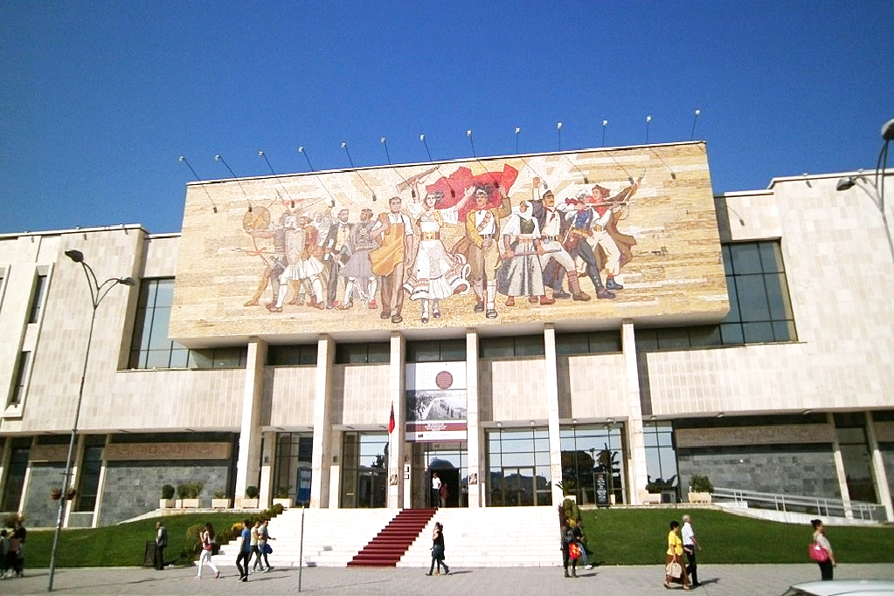
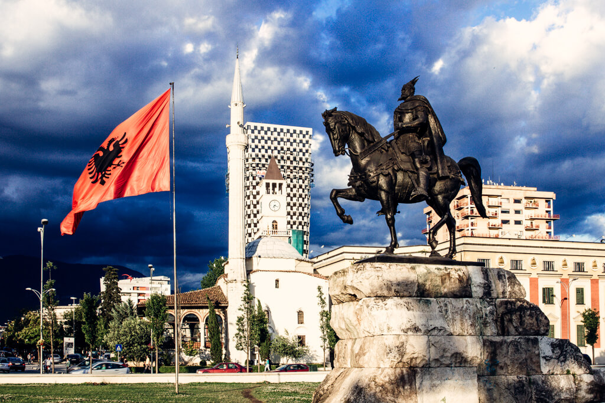

Il turismo dentale sta rapidamente diventando la scelta preferita per le persone che cercano cure dentistiche di alta qualità a prezzi accessibili e l'Albania è in prima linea in questa tendenza in crescita. Tra le numerose cliniche del paese, Emerald Dental si distingue come un faro di eccellenza, attraendo pazienti da tutta Europa e oltre che sono alla ricerca di trattamenti dentistici di livello mondiale combinati con un'esperienza di viaggio unica.
Situata nel cuore dell'Albania, Emerald Dental non è solo un'altra clinica dentale; è un luogo in cui la tecnologia dentale avanzata incontra la cura compassionevole. La clinica è rinomata per offrire una gamma completa di servizi dentistici che soddisfano le esigenze dei pazienti sia locali che internazionali. Dai controlli di routine agli interventi chirurgici dentali complessi, il team di Emerald Dental è attrezzato per gestire tutti gli aspetti delle cure dentistiche con competenza e precisione.
Emerald Dental è progettato pensando al paziente moderno, combinando strutture all'avanguardia con un ambiente accogliente e confortevole. Le attrezzature avanzate e le tecniche all'avanguardia della clinica garantiscono che ogni trattamento venga eseguito con la massima precisione e cura. Inoltre, la clinica aderisce a rigorosi standard internazionali in materia di igiene e sicurezza, dandoti tranquillità durante il tuo trattamento dentistico.
La reputazione della clinica si estende ben oltre i confini dell'Albania. Emerald Dental è diventato un nome affidabile nel turismo dentale, noto per la sua capacità di fornire cure di alta qualità a una frazione del costo che potresti pagare nell'Europa occidentale o negli Stati Uniti. Questa convenienza, unita alla dedizione della clinica all'eccellenza, rende Emerald Dental la scelta migliore per chiunque stia considerando il turismo dentale in Albania.
Perché scegliere Emerald Dental?
Competenza odontoiatrica affidabile: la nostra clinica è composta da professionisti altamente qualificati ed esperti che eccellono in varie specialità odontoiatriche, assicurando che ogni paziente riceva la migliore assistenza possibile.
I pazienti risparmiano notevolmente sulle procedure odontoiatriche presso Emeraldental.com, beneficiando di prezzi molto più bassi rispetto a quelli di molti paesi occidentali, senza sacrificare la qualità dell'assistenza.
La nostra clinica è dotata delle più recenti tecnologie e attrezzature odontoiatriche, assicurando che ogni trattamento venga eseguito con precisione e cura.
Utilizziamo solo materiali di prima qualità che soddisfano rigorosi standard internazionali, fornendo soluzioni odontoiatriche durature ed efficaci.
Dal momento del tuo arrivo, il nostro team multilingue si impegna a rendere la tua esperienza confortevole, senza stress e su misura per le tue esigenze uniche.
Con oltre 10,000 pazienti soddisfatti da tutto il mondo, la reputazione della nostra clinica la dice lunga sull'eccezionale servizio che offriamo.
Tutti i trattamenti su Emerald Dental sono supportati da documentazione e garanzie complete, dandoti la tranquillità che la tua salute e sicurezza sono le nostre massime priorità.
Oltre alle cure dentistiche, la tua visita in Albania offre l'opportunità di esplorare il suo ricco patrimonio culturale e gli straordinari scenari naturali, rendendo il tuo viaggio sia utile che piacevole.
I nostri specialisti odontoiatrici frequentano regolarmente corsi di formazione avanzata per rimanere al passo con le ultime tecniche e innovazioni nel settore.
Siamo orgogliosi di servire pazienti provenienti da tutta Europa, dagli Stati Uniti e oltre, fornendo assistenza in un ambiente accogliente e multiculturale
Scegliere Emerald Dental per il tuo viaggio di turismo dentale in Albania è una decisione che ti assicura non solo cure dentistiche di alto livello,
ma anche un'esperienza indimenticabile in un paese ricco di cultura e bellezza naturale. Con il nostro team di professionisti esperti, strutture
all'avanguardia e l'impegno per la soddisfazione del paziente, ci assicuriamo che il tuo trattamento dentale sia il più confortevole ed efficace
possibile.
Per rendere la tua visita ancora più comoda, attualmente offriamo pacchetti speciali che includono il trasporto alla nostra clinica e la sistemazione
in hotel quando selezioni uno dei nostri piani di trattamento completi. In alcuni casi, potresti anche qualificarti per il trasporto e l'alloggio gratuiti,
a seconda del pacchetto che scegli. Il nostro personale dedicato è pronto ad assisterti in ogni fase del percorso, assicurandoti un'esperienza fluida e piacevole.
Dai un'occhiata al listino prezzi per i trattamenti dentali.
.
Che tu preferisca parlare direttamente con uno dei nostri dentisti o inviare un'e-mail, siamo qui per fornirti un preventivo personalizzato e rispondere a
qualsiasi domanda tu possa avere. Il tuo sorriso perfetto è a portata di clic: contattaci oggi stesso e lascia che ci occupiamo del resto.
Tirana era una volta parte integrante dell'impero romano e l'eredità di quel periodo è ancora evidente e rappresentato dai Mosaici di Tirana, costruiti nel 3° secolo. Al 4° secolo, il castello di Petrele fu costruito sotto il regno di Giustiniano I dell'impero bizantino.
Tirana è nota per la sua ricca architettura ottomana, fascista e di epoca sovietica. Una grande concentrazione di edifici storici è centrata intorno Piazza Skanderbeg, che prende il nome dalla sua statua equestre di un eroe nazionale, è anche il fulcro principale di eventi e celebrazioni. Da lì è possibile accedere al Museo di Storia Nazionale, alla Torre dell'Orologio "Sahati" e alla Moschea Et'hem Bey.



Altre attrazioni includono il Mosaico, il Castello di Petrele, la Grotta di Pellumbas e Shkalla e Tujanit, che giacciono alla periferia di Tirana e sono popolari anche tra i locali tutto l'anno. Puoi fare escursioni, goderti il paesaggio e anche un buon pasto caldo che ti lascerà desiderare di più.
Volo, pick-up aeroporto e hotel: gratis.
Ci occuperemo del tuo trasporto dall'aeroporto alla clinica/hotel. Anche l'alloggio è fornito da noi, con una selezione di camere per soddisfare qualsiasi esigenza tua o del tuo compagno.
Rilassati dal volo, libera la mente e riposati per un po' prima di continuare con i servizi dentistici o qualsiasi attività desideri.